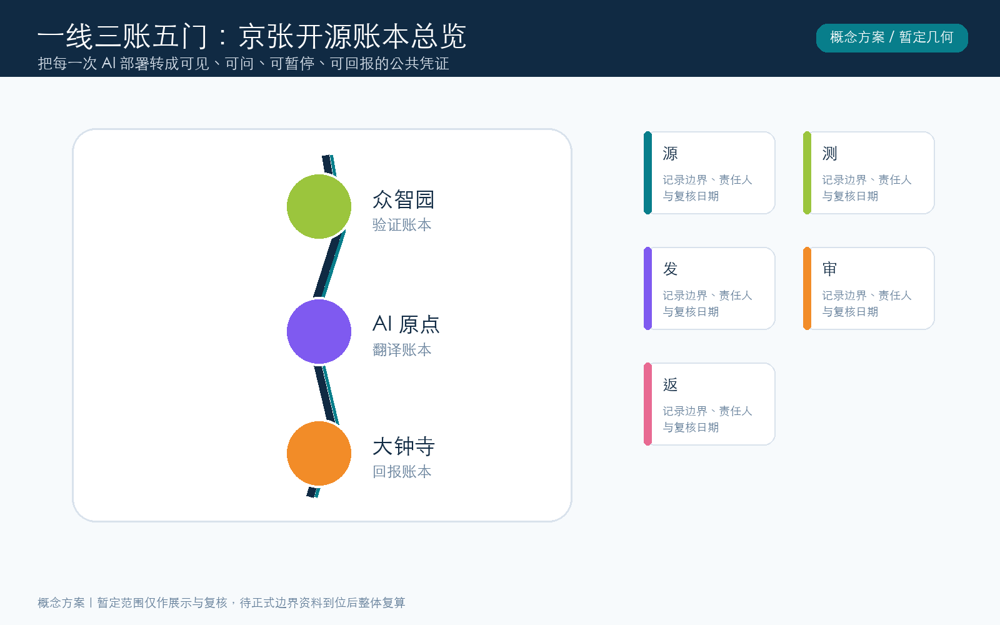
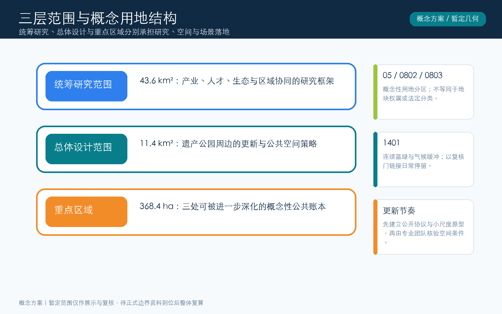
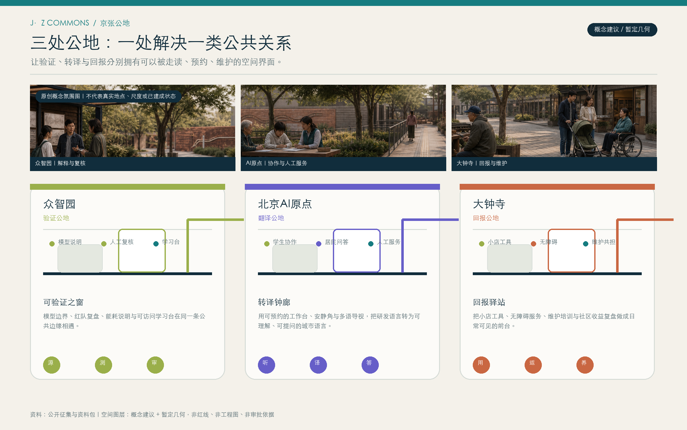
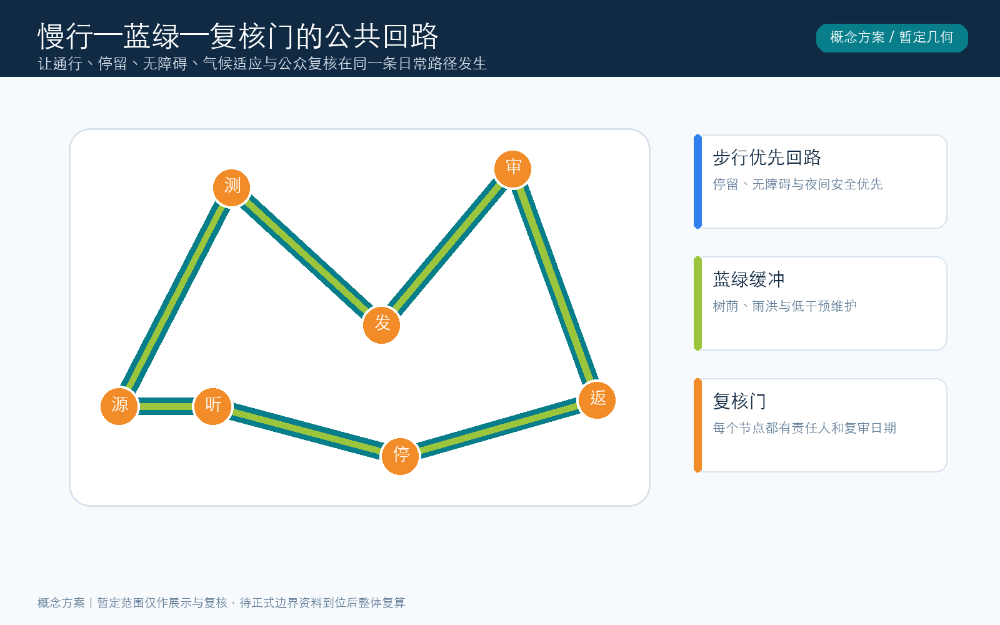
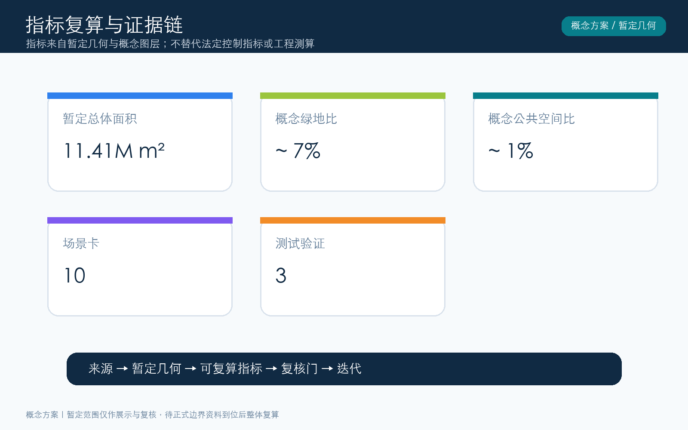

京张开源账本：可回查的 AI 公共回报带
以“每一项AI部署都有公共凭证”为核心的概念性城市设计方案；所有空间表达以暂定边界为约束，待正式资料到位后复算。
京张开源账本：可回查的 AI 公共回报带
暂定边界声明： 本方案使用资料包公开的暂定范围作为概念约束；它不是法定红线、产权界线、工程边界或审批依据。正式边界资料到位后，须替换图层并重跑面积、图纸和合规复核。
设计依据与资料清单
本方案以公开征集公告、资料包的任务书、允许设计空间、暂定边界和标准索引为工作起点。公告给出了43.6平方公里统筹研究范围、约11.4平方公里总体设计范围以及三处重点地区的工作层级；它没有在公开资料中提供可作为法定红线使用的精确矢量附件。因此，本文把空间图层定义为“暂定约束+概念设计”，而不是现状测绘、产权界线或审批控制。所有面积均由本包几何在EPSG:4548下复算，目的在于保持内部一致性；正式边界、既有建筑、道路红线、管网、权属、保护控制和工程条件到位后，必须替换并重新核验。
本包引用的全球案例仅用于比较方法：创业生态如何组织共享设施、伙伴接口、测试机制和公共叙事；不把这些案例的空间尺度、制度或运营成绩移植为本地事实。资料清单同时记录来源用途、假设和证据对象，使读者能区分公开事实、暂定几何与设计建议。 来源 来源 空间数据

三层范围工作框架
“一线三账五门”不是把三层范围叠成一张大图，而是给不同决策设置不同问题：统筹研究范围处理AI产业、人才、通勤、文化与区域协同；总体设计范围处理遗址公园周边的公共界面、慢行、更新节奏和新型基础设施；重点区域处理可以被走读、试用和复核的场景原型。京张开源账本的“一线”是一条沿遗产叙事串联的慢行服务线；“三账”分别是记忆账本、验证账本和公共回报账本；“五门”依次为源、测、发、审、返。
每一门都要求一个明确的对象边界、责任人、公众可读说明、停止条件和下一次复核日期。这样，技术从实验室进入街区时不只是展示屏或装置，而有一张可追踪的公共凭证。范围几何依旧是暂定的，三层框架先组织行动和证据，不据此划定法定分区。 来源 深度 空间数据

统筹研究范围产业与未来城市研究
统筹研究提出“可回查的AI公共回报带”作为三种官方定位的连接语言：百年京张文化带提供记忆与行走的时间尺度，都市AI生活体验带提供日常使用与反馈的场景尺度，AI融合创新带提供研发、转化和治理的协同尺度。它不把AI理解为单一园区招商标签，而把研发机构、创业团队、学生、周边居民、小店经营者、公共服务人员和来访者放在同一张公共回报账本中。
生态组织采用六个相互制约的接口：研究工具和数据边界说明、共享试验与红队复盘、采购与转化的透明门槛、社区可理解的服务入口、开发者维护贡献记录、独立复核与申诉窗口。Station F、MaRS、one-north、Barcelona Supercomputing Center、Digital Catapult和UnternehmerTUM被视为“生态接口”的方法参照，而非可直接复制的城市蓝图。每个接口都需在本地由合作主体、数据规则和使用者共同确认。 来源 深度 指标
总体设计范围城市更新与控规深度城市设计
总体设计以“线性可读、节点可停、回报可见”为原则。沿线不提出未核验的容积率、限高或拆改清单，而通过连续绿荫、可转换的首层界面、小尺度服务工坊、夜间可读导视和复核门构成更新策略。空间结构由一条账本主线、三处公共账本和五类门槛组成：源门说明数据/模型的用途边界，测门组织测试，发门说明发布对象，审门邀请复核，返门呈现公共收益及维护责任。
所谓“控规深度”在这里体现为可供专业团队接续的控制问题清单：公共界面连续性、慢行优先、无障碍停留、雨洪缓冲、低噪低眩光、首层可转换、运营责任与复核周期。它们是概念导则，不能替代法定控制指标。暂定总体范围中的概念用地分区仅用于内部面积复算和图纸阅读，待正式边界、规划条件及既有调查资料齐备后再开展专业协调。 标准 深度 空间数据
重点区域详细设计
众智园被定位为“验证公地”：把模型评测、能耗说明、红队复盘、可访问演示和学习工坊安排在一条可走读的公共界面中，形成AI不是黑箱的第一扇窗。北京AI原点社区是“翻译公地”：以工作坊、社区译站、学生协作台和多语导视，将研发术语转为可理解、可质询的日常服务说明。大钟寺是“回报公地”：以就业支持、无障碍服务、小店工具、维护培训和回报展台呈现技术如何在社区留下可见收益。
三处均配置一个AI朝圣地标，但地标不是孤立的雕塑：众智园“可验证之窗”展示模型边界和复核时间；AI原点“转译钟廊”将问题转成公共语言；大钟寺“回报站”显示服务、维护和反馈的账目。建筑、广场、绿地及节点均为概念图层，未声明现状、保护等级或建设批准。 深度 指标 空间数据

AI 创新生态、人才画像与 AI+ 场景
本方案设置五类首要使用者：负责模型与基础设施的研究者，准备把工具转化为产品的创业者，在场地学习、实验和维护的学生与开发者，需要可理解服务的居民与老年使用者，以及连接线下秩序与数字流程的服务人员/小店经营者。画像不是市场分层标签，而是测试“谁获得帮助、谁承担成本、谁能提出异议”的检查表。
十张场景卡包括：1开源模型边界导览；2面向学生的可信AI学习台；3小店经营助手的人工复核队列；4无障碍出行说明器；5遗产故事共创编辑台；6社区议题摘要墙；7低碳算力预约提示；8夜间安全与照明反馈；9公共维护任务匹配；10跨语言来访者问答。三类测试验证分别落在验证公地的模型红队、翻译公地的居民可理解性测试、回报公地的服务收益复盘。所有测试均应取得参与者知情同意，并提供退出与人工替代路径。 来源 指标 指标
用地、建筑规模与拆改留方案
用地表达采用“功能带+公共界面”的概念组织，而非确认地块。资料包许可的用地编码被用于区分混合服务、研发转译、开放创新和绿地缓冲的讨论层，但不推断产权、现状用途或法定性质。建筑基底只表示可讨论的工作坊和公共接口位置：验证与审计工作坊、城市AI转译工坊、回报服务工坊。每个基底的实际保留、更新、拆除或新建，均须以后续的既有建筑调查、结构安全、消防、历史文化资源和利益相关者协商为前提。
因此，本包不提供未经证实的建筑规模、容积率、限高、拆改量或投资额度。可进入下一阶段的不是“建设清单”，而是一张保留—更新—替换的评估框架：先识别可持续使用的空间，再判断公共界面能否改善，最后才讨论最小干预的物理更新。概念建筑面积和覆盖率只为几何自检服务，不形成项目承诺。 标准 指标 空间数据
交通、轨道、市政与公共服务设施
交通策略从“看得见的服务路径”开始：开源账本慢行主线用连续遮荫、低坡度、清晰停留点和跨界面导视串联三处公地；转译横向街为社区、学校、研发和商业之间保留短距离可达的协作入口。它并不重绘现有道路红线、轨道线路、站点或停车配建指标。后续专业深化需以现状交通调查、轨道接驳、消防救援、市政管线、物流、无障碍与夜间安全评估为基础。
新型基础设施被理解为可以被公众问责的服务：边缘计算应展示能耗和停机策略，传感设备应公开用途与数据保留期限，公共终端应提供非数字替代路径，网络运维应有可联系的责任主体。公共服务优先支持学习、语言转译、无障碍、热环境避险和小店能力提升，而不把数据采集本身当作服务成果。 深度 深度 空间数据
蓝绿空间、公共空间与城市风貌
蓝绿系统不是装饰性绿化，而是账本主线的气候与社会基础设施。北、中、南三段概念花园分别承担树荫停留、遗产缓冲和回报服务外溢；三处小尺度公共空间则承担说明、反馈、展示和协作。它们共同形成“可以停下来问一个问题”的日常城市场景。风貌表达避免将AI做成高亮屏幕景观，而采用低眩光、可更新的信息层、可触摸的材料、夜间安全照明和可维护的植物群落。
为了可及性，所有导视应至少提供清晰的非技术语言、听觉/视觉替代、无障碍路径提示和人工服务位置。绿色、公共空间与慢行图层在暂定范围内复算比例，目的不是宣称规划指标已被满足，而是让下一轮资料替换后能快速发现变化。 标准 指标 指标

更新项目清单、实施政策与分期计划
实施不按大拆大建排序，而按“先建立可信关系，再扩大可用服务”的节奏推进。第一期在众智园建立模型边界说明、公共演示、红队复盘和复核门样机；第二期在AI原点形成转译网络、社区协作台、学生维护计划和多语导视；第三期在大钟寺公开回报目录、就业/服务评估和维护共担机制。每期均应设置停止条件：若公众理解度、可及性、数据最小化或维护能力未达成，则暂停扩展并重新设计。
更新项目清单采用“协议+空间+运营”的组合：公共说明协议、学习与测试工坊、绿荫停留点、无障碍服务台、维护贡献册和年度公开复盘。政策、资金、招商、审批和建设主体均非本包可确认事项，应通过合法的专业程序、预算程序和社区协商另行决定。 深度 深度 空间数据
指标体系、面积复算与合规矩阵
指标体系将空间指标与公共回报指标并列：暂定总体范围面积、概念绿地面积、概念公共空间面积、概念建筑基底面积、绿地比、公共空间比，以及10张场景卡、3个测试验证场景、5类画像和3个公共地标。前六项以本包GeoJSON在EPSG:4548下计算；后四项以方案文本和图纸计数。这样可以区分可由几何复算的量与需要由运营记录验证的量。
合规矩阵逐条连接官方征集要求、六项agent任务、标准响应、图纸、几何、指标、来源、假设和自检。它并不把“矩阵已填”表述为审批或专业结论：官方精确边界、法定控制、现状测绘、工程条件及权属仍是重要缺口。每一次替换边界或调整图层后，应重新运行空间复核、更新指标和图纸，再由专业人员判断其适用性。 指标 指标 深度

风险、版权与合规说明
首要风险是边界与基础资料的精度：公开材料提供的是范围文字、面积量级和暂定几何，不足以支撑法定控制或工程放样。第二类风险是算法服务可能带来的隐私、偏见、误导性自动化和数字排斥，因此所有场景均要求最小数据、明确用途、人工替代、退出机制、可解释说明和独立复核。第三类风险是维护能力不足；每一个门和地标都应有责任主体、维护预算来源、复审日期与停止条件。
本包的文本、概念几何、示意图、静态网页和PDF均由声明的AI协作生成或来自资料包允许的公开/清权来源；全球案例仅作方法参照并在sources.json中记录。未引入个人信息、商业地图底图或需要授权的图片。方案以CC BY 4.0发布，便于在署名条件下讨论与再利用，但不授予任何第三方对具体空间、项目或技术的实施许可。 来源 深度 空间数据
参考资料
来源 北京市规划和自然资源委员会公开征集预公告及资料包的范围、任务和交付说明。
来源 open-city-ai/haidian 项目的城市设计AI征集任务书、提交规范、范围声明和六项agent任务。
来源 资料包内暂定范围GeoJSON及其说明，用于概念讨论和本包内复算，不作为法定红线。
来源 Station F、MaRS、one-north、Barcelona Supercomputing Center、Digital Catapult、UnternehmerTUM的公开机构页面；仅用于比较创新生态、共享基础设施、转化与公众接口的方法。
标准 标准
城市设计和控制性详细规划的引用用于组织专业问题，不能因概念性回应而替代法定程序。标准 标准
用地编码只用于可读性与内部复算。标准
本参考清单同时提示使用边界：可公开核查的来源支持任务理解和方法讨论；涉及空间、工程、产权或法定控制的判断，必须在获得相应资料并经专业复核后另行形成。